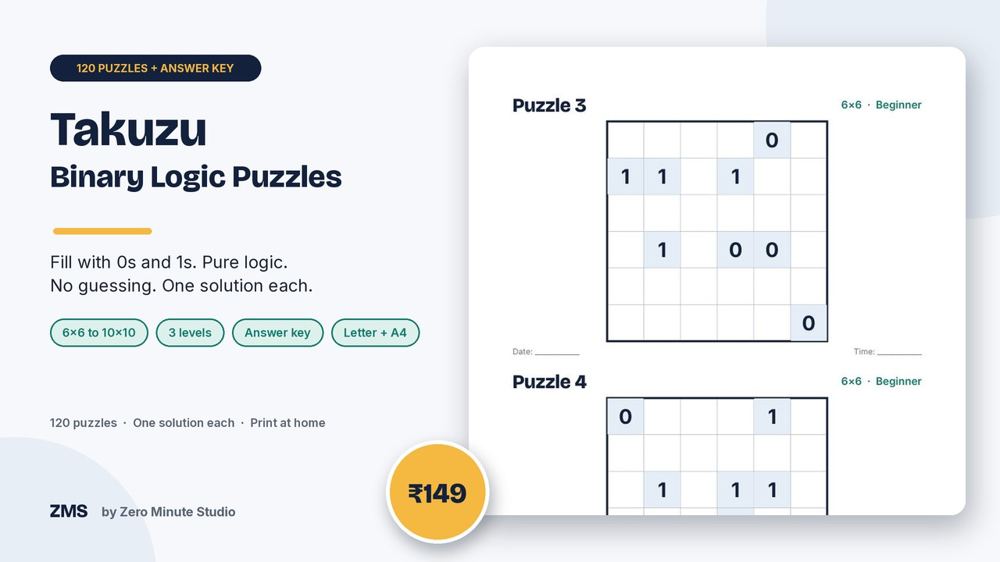
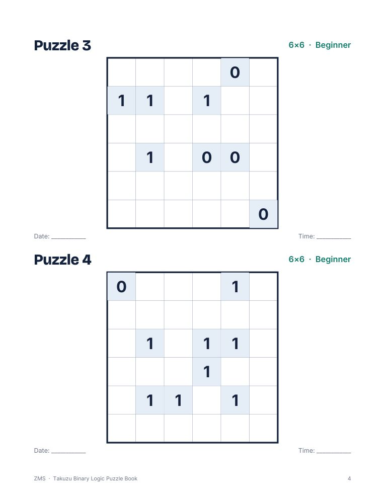
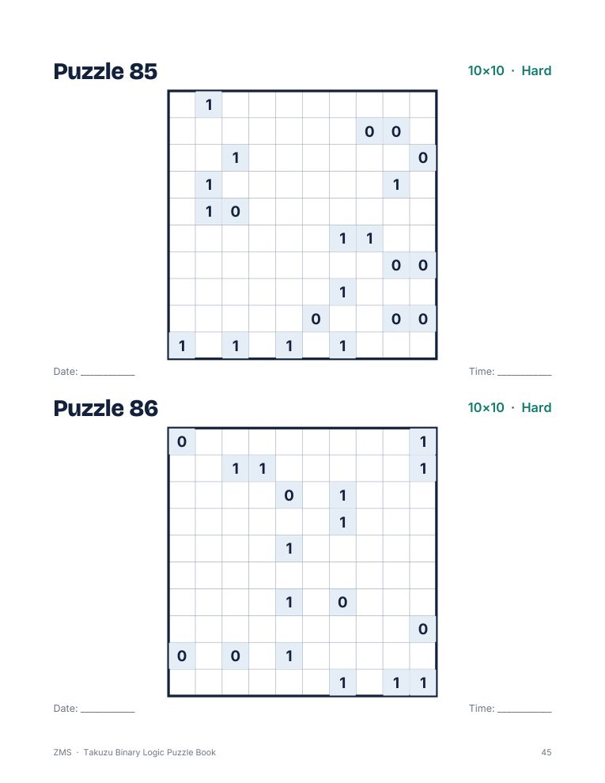
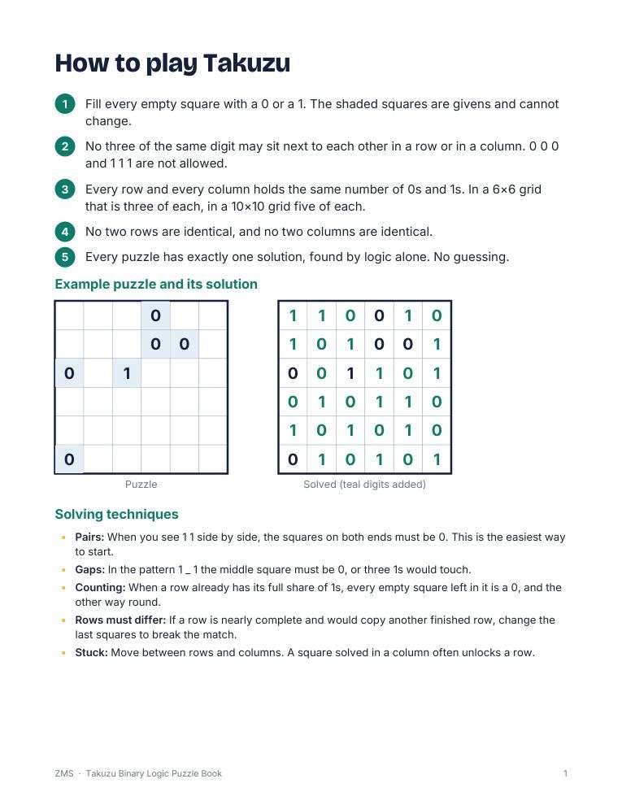
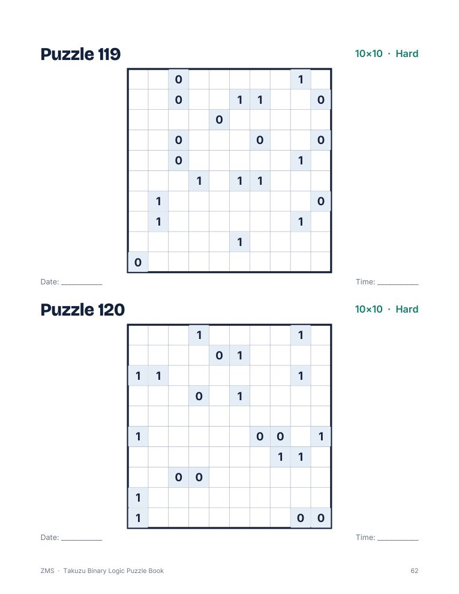

Takuzu Binary Logic Puzzle Book: 120 Puzzles

Takuzu, also known as Binairo, is a binary logic puzzle played with just 0s and 1s. Fill each grid so that no three identical digits sit together, every row and column holds equal numbers of 0s and 1s, and no two rows or columns are identical. This book gives you 120 puzzles from easy 6x6 grids up to hard 10x10 grids, a how-to page with solving techniques, and a full answer key. Every puzzle was verified by two separate solvers to have exactly one solution.
- 120 puzzles: 30 Beginner 6x6, 45 Medium 8x8, 45 Hard 10x10
- Two large grids per page with a date and time line
- How-to-play page with a worked example and solving techniques
- Progress tracker to tick off each puzzle
- Full answer key for all 120 grids
- Two print-ready PDFs: US Letter and A4
Preview




FAQ
How does it work? Fill every square with 0 or 1: no three the same in a row, equal 0s and 1s in each row and column, and no repeated rows or columns.
Is there an answer key? Yes, all 120 solutions are at the back.
How do I get it? Instantly after payment: a US Letter PDF, an A4 PDF and a short README. Print at home.
We don't do refund & return ✌️